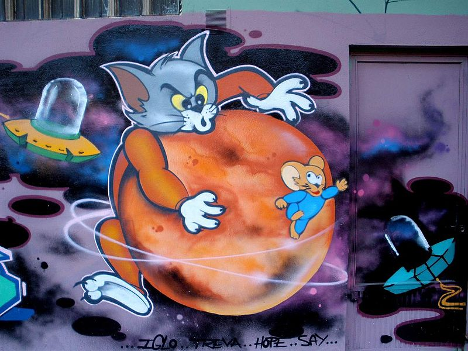
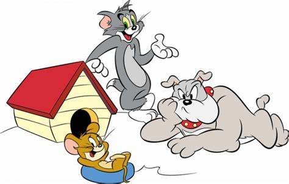
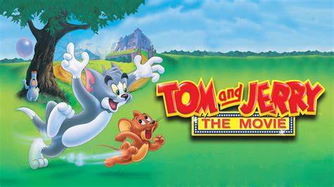
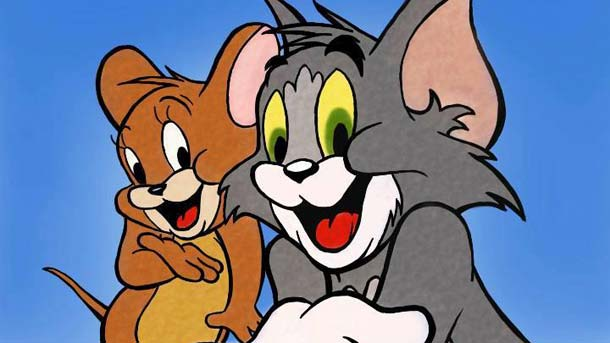
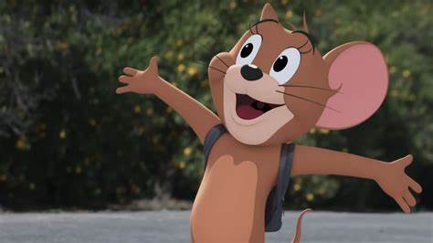
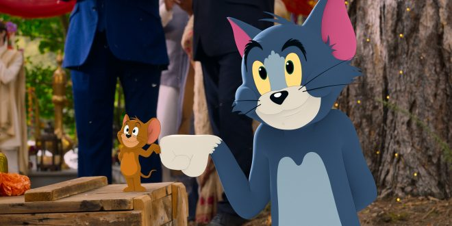

🐭 Том и Джери 🐱
Том и Джери са анимационни герои, създадени от аниматорите Уилям Хана и Джоузеф Барбера.
Те стоят в основата на серии от кратки анимационни филми, продуцирани от Метро-Голдуин-Майер в периода 1940 – 1958 г.
Интересни факти за Том и Джери
- Том и Джери дебютират на малкия екран на 10 февруари 1940 г.
- При първата си поява рисуваните персонажи се наричат Джаспър и Джинкс.
- Имената Том и Джери са предложени от аниматора Джон Кар, който печели вътрешен конкурс сред служителите на студио „Метро-Голдуин-Майър“. Наградата му за това е 50 долара.
- Създателите Уилям Хана и Джоузеф Барбара по-късно основават собствено студио, на което телезрителите дължат още любими поредици като „Семейство Флинтстоун“, „Скуби-Ду“, „Мечето Йоги“, „Топ Кет“, „Смърфовете“.
- Говори се, че въпреки че Барбара е намирал за добра основната идея за котка, преследваща мишка, Хана се е оплаквал, че тя не е особено оригинална.
- Оригиналната поредица в периода 1940-1958 г. включва 114 кратки анимационни филма. Поредицата печели седем награди „Оскар“. Единствената друга анимационна поредица със същия брой отличия е „Весели мелодии“ на „Уолт Дисни“.
- През 1972 г. в Шарджа – град и емирство в ОАЕ, е издадена серия пощенски марки с ликовете на анимационните Том и Джери.
- Стопанката от поредицата се казва Мами Две Пантофки (Mammy Two Shoes) и е представена в образа на класическата домакиня от афро-американски произход.
- Филмчетата за „Том и Джери“ винаги били критикувани за прекалено голямото насилие в тях, но на практика никога някой от героите не е пускал дори капчица кръв.
- Музиката играе много важна роля в серйките. Тя подчертава ритъма на действието, а звуковите ефекти подхранват емоциите на сцените.
- В Аржентина, Армения, Бразилия, Колумбия, Чили, Египет, Индия, Казахстан, Ливан, Мексико, Пакистан, няколко страни от Югоизточна Азия, Венецуела, други страни от Латинска Америка и в източноевропейски страни като България и Румъния, Cartoon Network все още излъчва епизоди на „Том и Джери“ всеки ден.
- Том и Джери, за разлика от повечето герои, не говорят често. Въпреки това котаракът пее, ухажвайки женските котки. Пример за това е изпълнението на песента на Луис Джордан Is You Is or Is You Ain’t My Baby в епизода Solid Serenade.
- В опитите си да хване Джери, Том често трябва да се справи и с кучето Спайк – английски булдог, познат като „Убиец“ или „Бъч“ в някои епизоди, който напада котарака, в случай че синът му Тайк пострада.
- Тъфи е малко сиво мишле, което често прави компания на Джери. Тъфи е безгрижен и често подценява дадена ситуация, която може да бъде опасна за него. Той се вслушва в командите на Джери, но по някой път може да реагира и по свой си начин. Говори в епизодите, в които е мускетар, на френски. В епизода за Робин Худ гласът му е по-мъжки, дрезгав и с лондонски акцент.
- Бъч е черно-бял котарак, за пръв път появил се в епизода Baby Puss. Той е водачът на банда улични котараци. Обикновено помага на Том да хване Джери. Бъч води битки срещу Том в свалянето на котката Тудълс Галор в някои епизоди.



ГЕРОИ
- Котаракът Том и мишокът Джери
- Говорещи Том и Джери
- Мамчето
- Спайк и Тайк
- Тъфи
- Бъч



🐈 Интересно видео за Том и Джери